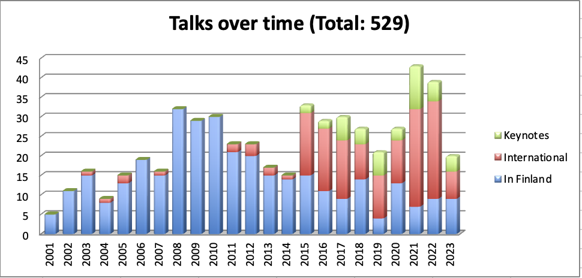

Speaking in public 2001-2023, Maaret has delivered 529 sessions out of which 50 are keynote sessions.

slides, video, article, abstract available on some of the talks.
45 min
NEW
Sociotechnical Guardrails for AI-Driven Application Testing
KEYNOTE
Agile Testing Alliance Global Testing Retreat, November 18-19th 2024, Online
#AI, #ContemporaryExploratoryTesting
45 min
NEW
Test Automation - Friend or Foe
TALK
Online Testing Conference, November 12th, Online
#TestAutomation, #Improvement
45 min
NEW
Code or Low Code - Navigating the Test Automation Options
TALK
TBD, November 27th 2024, Helsinki, Finland
#TestAutomation, #Programming, #Tools
45 min
Social Software Testing Approaches
KEYNOTE
Testing United, November 5th & 6th 2020, Online
TALK
Quality Engineering Meetup at Zalando, June 4th 2024, Helsinki, Finland
#EnsembleTesting, #EnsembleProgramming, #PairTesting, #PairProgramming
45 min
NEW
A Process / Compliancy Story, Case of Last Two Years
TALK
Customer Event, May 30th 2024, Helsinki, Finland
#Requirements, #Releases, #Process, #Compliance
45 min
Make Releases Routine
TALK
Finnish Testing Meetup, May 23rd 2024, Helsinki, Finland
#Releases, #Failure, #ResultsGap
45 min
Make Your Impact with Testing
KEYNOTE
HUSTEF, October 3-5th 2023, Budapest, Hungary
TALK
The Shortcut, November 3rd 2023, Helsinki, Finland
#Impact, #ResultsGap, #Career
45 min
Whose Test Is It Anyway?
KEYNOTE
DevTalks, June 22th 2023, Bucharest, Romania
EuroSTAR, June 15th 2023, Antwerp, Belgium
#ResultGap, #UnitTesting, #ExploratoryTesting, #Improv
20 min
Acceptance Testing - Making a Difference for Production Time
KEYNOTE
Customer Event, April 26th 2023, Online
#AcceptanceTesting, #Motivational
45 min
Breaking Illusions with Testing
KEYNOTE
DDD Europe, January 31st & Feb 1st 2019, Amsterdam, the Netherlands
JAX London, October 9th 2019, London, United Kingdom
SLASSCOM Quality and Business Excellence Summit, March 10th 2021, Online
German Testing Day, May 3rd & 4th 2021, Online
TALK
Zeit Day Berlin, September 23rd 2017, Berlin, Germany
Conferencia Agile Testers - Brazilian Online Conference, October 28th 2018, Online
Agile Greece Summit, September 20th 2019, Athens, Greece
TECH(K)NOW Day, March 8th 2022, Online
#Testing, #Improvement, #TechExcellence
45 min
Let's Do a Thing and Call It Foo
KEYNOTE
Testμ Conference, August 23rd 2022, Online
Customer Event, December 8th 2022, Helsinki, Finland
TALK
NewCrafts Conference, May 25-26th 2023, Paris, France
FooConf, February 1st 2023, Helsinki, Finland
Customer Event, January 30th, 2023, Online
Supermetrics Tech Meetup, August 17th 2022, Helsinki, Finland
#ResultGap, #UnitTesting, #ExploratoryTesting, #GenAI
45 min
The Automationist's Gambit
KEYNOTE
Customer Organization, September 29th 2021, Online
EuroSTAR 2021, September 30th 2021, Online
SANAE Software Testing BEER.EX September 28th 2022, Bratislava, Slovakia
TALK
SQA Point Meetup, October 28th 2021, Online
Geekle QA Summit, February 16th 2022, Online
Software Testing Karlsruhe meetup, June 14th 2022, Online
#ContemporaryExploratoryTesting
45 min
Hands-off Exploratory Testing - How to Manage Test at Scale
KEYNOTE
QA Talks, June 4th 2021, Online
HUSTEF Conference, October 18th to 21st 2021, Online
TALK
Game of Testing, September 4th 2022, Online
#ModernTestManagement, #ExploratoryTesting
45 min
Intersection of Automation and Exploratory Testing
KEYNOTE
Selenium Conference India, June 29th & 30th 2018, Bengaluru, India
TestIstanbul, April 16th 2019, Istanbul, Turkey
Testing Cup, June 10th 2019, Poznan, Poland
TALK
Testing Guild Conference, June 20th 2018, Online
Software Testing Helsinki Meetup, October 2018, Helsinki, Finland
Dev#, September 21st 2019, Gdansk, Poland
React Finland, April 25h 2019, Helsinki, Finland.
#ContemporaryExploratoryTesting, #ExploratoryUnitTesting
45 min
Learning (Programming) through Osmosis
KEYNOTE
Agile Day Riga, July 7th & 8th 2017, Riga, Latvia
Agile Testing Days, November 13th to 17th 2017, Potsdam, Germany
TALK
Devoxx UK, June 8th to 10th 2016, London, UK
Nordic Testing Days, June 8th & 9th 2017, Tallinn, Estonia
#EnsembleTesting, #EnsembleProgramming
45 min
A Practitioner's Guide to Contemporary Exploratory Testing
KEYNOTE
Axiom Summit Conference, May 14th 2022, Online
TALK
Customer Event, November 10th 2022, Online
#ContemporaryExploratoryTesting
45 min
Making Teams Awesome
KEYNOTE
SEETest Conference, September 29th 2017, Sofia, Bulgaria
STARWest Conference, October 1st to 6th 2017, Anaheim, USA
Testing Portugal, November 28th 2017, Lisbon, Portugal
TALK
STAREast Conference, April 29th to May 5th 2018, Orlando, USA
#Teamwork, #ModernAgile, #WorkBreakdown, #TechExcellence
45 min
Contemporary Exploratory Testing
KEYNOTE
Selenium Summit, February 7th 2021, Online
TALK
Breakpoint, March 24th 2021, Online
Customer Organization, November 24th 2021,Online
Customer Organization, December 17th 2021, Online
CodeMentor, June 16th 2022, Online
Test Automation Talks Meetup, July 5th 2022, Online
#ContemporaryExploratoryTesting
45 min
Exploratory Testing on Computer Interfaces
KEYNOTE
API Conference, October 16th 2019, Berlin, Germany
#ContemporaryExploratoryTesting, #APITesting
45 min
Perfecting the Craft of Test Automation
KEYNOTE
Agile and Automation Days, November 21st 2016, Warsaw, Poland
TALK
AgileJKL meetup, September 7th 2016, Jyväskylä, Finland
Talentum Testaus, November 8th 2016, Helsinki, Finland
#ContemporaryExploratoryTesting, #ProgrammaticTests
45 min
Practice Makes Better - 5x to Continuous Delivery
KEYNOTE
Applitools Future of Testing, June 29th 2021, Online
#ModernTestManagement, #ContinuousDelivery
45 min
Building Status - or Why None of My Advice Will Work for You Today
KEYNOTE
Agile Testing Alliance Global Testing Retreat (ATAGTR), December 12th & 13th 2020, Online
#Attitude, #StatusDifferences, #Improvement
45 min
Targeting Errors of Omission
KEYNOTE
Agile Testing Alliance Global Testing Retreat (ATAGTR), December 9-11th 2022, Online
#ResultGap, #Techniques, #Documentation
45 min
Go Find What We May Have Missed
KEYNOTE
testjsconf, November 18th & 19th 2021, Online
TALK
Customer Organization, January 10th 2022, Online
#ResultsGap, #ResultsCoverage
45 min
I Have a Rock in My Shoe - Navigating Improvement
KEYNOTE
Agile Testing Alliance Global Testing Retreat (ATAGTR), December 11th 2021, Online
#Improvement, #Change, #Attitude
45 min
Testing Becoming Harder to Be Valuable
KEYNOTE
Testing Voices, June 29th 2021, Online
#ResultsGap, #Value, #Cost
45 min
Increase Your Impact as a Tester
KEYNOTE
Swiss Testing Days, February 16th 2017, Zurich, Switzerland
Moldova Software Testing and Automation Conference, Februrary 10th 2018, Chisinau, Moldova
#Impact, #ExploratoryTesting, #ModernAgile
45 min
Opportunity Cost: Balancing Now and Future
KEYNOTE
World Quality Summit, September 8th 2021, Online
#Value, #Cost, #Quality
45 min
Opportunity Cost Drives my Testing
KEYNOTE
Step-In Summit, September 4th 2020, Online
#Value, #Cost, #Agency
30 min
Many Hats to Make a Tester
KEYNOTE
Appium Lite Conference, September 2nd 2021, Online
#WorkBreakdown, #Career
45 min
Quality - Learning is All that Matters
KEYNOTE
Customer Organization, December 20th 2018, Helsinki, Finland
Customer Organization, January 11th 2019, Helsinki, Finland
TALK
JAX London, October 9th 2019, London, United Kingdom
#Quality, #Learning
45 min
Next Level Teamwork: Pairing and Ensembling (Mobbing)
KEYNOTE
TestBash Australia, October 19th 2018, Sydney, Australia
#EnsembleTesting, #EnsembleProgramming, #PairTesting, #PairProgramming
45 min
An Ensemble (Mob) Testing Experience
KEYNOTE
TestBash Philly, November 10th & 11th 2016, Philadelphia, USA
TALK
NewCrafts Conference, May 18th & 19th 2017, Paris, France
Customer Organization, May 31st 2018, Helsinki, Finland
#EnsembleTesting, #EnsembleProgramming
45 min
Amplify Your Impact with Ensemble (Mob) Testing
KEYNOTE
UKStar, February 27th & 28th 2017, London, UK
#EnsembleTesting, #EnsembleProgramming
45 min
We're Work in Progress - Lessons on Becoming a Great Tester
KEYNOTE
Test Masters Academy New Testing Conference, September 26th & 27th 2016, New York, USA
TALK
FiSTB Testing Assembly, Septermber 20th & 21st 2016, Helsinki, Finland
#Learning, #ContemporaryExploratoryTesting, #Attitude
45 min
Collaborative Exploratory and Unit Testing
KEYNOTE
Testival, September 19th 2015, Split, Croatia
#EnsembleTesting, #EnsembleProgramming
45 min
Software Talks, Learn to Listen
KEYNOTE
Nortal Tech Days, May 22nd 2015, Tallinn, Estonia
#ExploratoryTesting, #ExternalImagination
45 min
Tales from Developer Tester Collaboration
KEYNOTE
Agile Serbia, April 23rd 2016, Belgrade, Serbia
TestBash NY, November 6th 2015, New York, USA
TALK
Software Testing Finland / Helsinki Agile Testing meetup, October 7th 2015, Helsinki, Finland
Customer Organization, September 10th 2015, Helsinki, Finland
#EnsembleTesting, #EnsembleProgramming, #PairTesting, #PairProgramming
45 min
From Observations to Insights on Test Specialist Careers, co-presented with Okechukwu Egbete
KEYNOTE
Testing Assembly, September 22nd 2022, Helsinki, Finland
TALK
Customer Organization, June 14th 2022, Online
#Career, #Mentoring
45 min
Serial Mentor's Lessons for Learning
SESSION
Teknologia '23 Tivia Stage, November 7th 2023, Helsinki, FInland
#Mentoring
45 min
Let's Play Rhetoric for All Things Testing
SESSION
TestMu, August 22-24th 2023, Online
#PublicSpeaking
45 min
Microblogging in Mastodon (in Finnish)
SESSION
Tivia IT Insider webinar, February 14th 2023, Online.
#SocialMedia
45 min
Coaching Teams to Modern Test Management
TALK
Testing Conf Chicago, May 4th 2023, Online
QA Touch Global Testers Summit, May 15th 2023, Online
Geekle QA Summit, May 30th-31st 2023, Online
#ExploratoryTesting, #ProgrammaticTests, #TestManagement
45 min
Time Management For Testers
TALK
Test Guru Summit, Feb 9th 2023, Helsinki, Finland
45 min
Practice Makes Better - What Repeating Shortening Times to Release Taught Me
TALK
ScanAgile, March 28-29th 2023, Helsinki, Finland
#ContinuousDelivery
45 min
Renegotiating Testing
TALK
7N Networking Event, March 16th 2023, Helsinki, Finland
#WhoDoesTesting, #ChangeTrends
45 min
Onko valmista ilman testausta? (Is there Done without Testing?)
TALK
Customer Organization, March 17th 2023, Online
15 min
Breaking Illusions with Exploratory Testing
TALK
XP2015, May 28th 2015, Helsinki, Finland
Agile 2016 Conference, July 25th to 29th 2016, Atlanta, GA, USA
#ContemporaryExploratoryTesting, #Improvement
45 min
Breaking Illusions about Testing - Testing Is Your Most Valuable Asset
TALK
BTD Conference, May 21st 2015, Brussels, Belgium
ScanAgile, March 11th 2015, Helsinki, Finland
7 min
Better Ideas at Test Design
TALK
TextFlix (23.10.2021), Online
45 min
Exploratory Testing - Explained and Experienced
TALK
Quality Week Event, Online (1.11.2021)
SEETEST Conference 2017, Sofia, Bulgaria (28.-29.9.2017)
TIVI Ohjelmistotestaus 2017, Helsinki, Finland (16-17.5.2017)
ExpoQA Academy Day, Barcelona (25.1.2017)
TestWorks Conference, Amsterdam, the Netherlands (6.10.2016) (co-trained with Maaike Brinkhoff)
Agile Serbia, Belgrade, Serbia (23.4.2016)
Santa Barbara Agile meetup, Santa Barbara, USA (15.4.2015)
7 min
Up Your Agency
TALK
TextFlix (28.11.2020), Online
45 min
An Update on What Happens in Testing
TALK
Customer Organization (18.3.2021), Online
45 min
Testing: from Why to How to What Next
TALK
JAMK (9.10.2020), Online
JAMK (2.11.2020), Online
JAMK (1.12.2020), Online
45 min
The Hacker Mindset or Breaking Something to Make it Work
TALK
SHIFT Business Webstival (27.10.2020), Online
45 min
Kuinka testaajaksi opitaan? - uranvaihtajan kesä koekaniinina (How to Learn to Become Tester - Career Changer's Summer as Lab Rat)
TALK
Mimmit Koodaa (Women who Code) -webinar (7.8.2020), Online
45 min
An Exploratory Tester's lessons on Security Threat Modeling
TALK
Customer Organization, online (18.5.2020)
Code Europe Wroclaw 2017, Wroclaw, Poland (13.12.2017)
Oredev 2017, Malmö, Sweden (6.-10.11.2017)
45 min
Pivotal Moments, Pivotal Experiences - a Career Review
TALK
maaretp Silver Jubilee (27.10.2022), Online
45 min
Patterns to Whole Team Test Automation Transformation
TALK
Selenium Conference India/Virtual (29-30.7.2022), Online
45 min
It's More Complicated that THAT!
TALK
SauceCon (4-5.5.2022), Online
Customer event (4.3.2022), Online
45 min
Good Exploratory Testing Tactics for Taking Over Testing
TALK
MoT SFAX, March 30th 2022, Online
45 min
Something in the Way We Test
TALK
TSQA, March 9th 2022, Online
#Documentation
45 min
How to Increase Your Impact
TALK
Customer Organization, January 22nd 2021, Online
45 min
Testing as Exploration and Delivering Continuously without Automation
TALK
Agile San Diego meetup, April 2nd 2015, San Diego, USA
45 min
Exploring Realities of Testing - Theory to Practice
TALK
MoT Cork Meetup, November 18th 2021, Online
45 min
Programming Assignments in Tester Interviews
TALK
Ohjelmistotestaus ry meetup (16.12.2021), Online
30 min
Experience report: Where is Test Strategy in an Agile Team
TALK
DEWT peer conference, Driebergen, the Netherlands (01/2015)
45 min
How to Get Better at Exploratory Testing
TALK
UNICOM Agile,DevOps,Testing (20.7.2022), Online
MoT Sarajevo Meetup (27.10.2021), Online
45 min
A Year in Test Automation
TALK
QAstiontime meetup (15.9.2021), Online
45 min
Women in Agile
TALK
Women in Agile Summit, Agile Testing Days, Potsdam, Germany (8.12.2016)
45 min
Little Learning Actions for Better Feedback
TALK
Serverless Architecture Conference 2019 (15.-16.10.2019), Berlin, Germany
45 min
Quality Doesn't Belong with the Tester
TALK
TestBash, Brighton, UK (27.3.2015)
45 min
Exploring Pipelines
TALK
TSQA meetup (1.4.2021), Online
45 min
Testaus muuttuu, muututko sinä? (Testing Changes, Do You?)
TALK
Prove Webinar, Nov 16th 2022, Online
45 min
Continuous Delivery without Automation
TALK
Agile Finland Continuous Deployment event, December 2nd 2014, Helsinki
Ministry of Testing Masterclass webinar, Online (16.9.2015)
STPConference, San Diego, USA (1.4.2015)
45 min
Experimenting in Context for Exploratory Testing
TALK
Agile Testing Days 2015, Potsdam, Germany (9.11.2015)
45 min
From Lean Startup to Intrapreneurial Testing
KEYNOTE
TinyTestBash 2015, Brighton, UK (23.10.2015)
TALK
FISBT Testing Assembly 2015, Helsinki, Finland (23.9.2015)
45 min
Minä en koodaa, olenko enää hyödyllinen? (I Don't Code, Am I No Longer Useful?)
TALK
Talentum Software QA & Testing Summit, October 7th & 8th 2014, Helsinki, Finland
90 min
Explore with Intent - Exploratory Testing Self-Management
TALK
Agile 2015, Washington DC, USA (4.8.2015)
">
90 min
Strong-Style Pairing
TALK
Agile 2016 Conference in Atlanta, GA, USA (25.-29.7.2016)
Tech Excellence meetup in Helsinki, Finland (June 2016)
45 min
Harnessing the Power of Learning, co-presented with Ivan Turbin
TALK
Nordic Testing Days 2018 in Tallinn, Estonia (6-8.6.2018)
45 min
Exploratory Testing Shift Left and Right - What great exploratory testing looks under conditions of TOAD (Testing, Observability and DevOps)
TALK
OmniTesting Conference (16.7.2020), Online
45 min
Test Automation is Test Documentation, demo talk
TALK
Mimmit Koodaa This Is Not a Webinar (20.11.2020), Online
45 min
Exploratory Testing Essentials
TALK
TechWell Webinar (2.4.2020), Online
45 min
Examples of Testing and a Tester's Work in Industry
TALK
Aalto University Course, September 16th 2014, Helsinki, Finland
45 min
Agile as If You Meant It
TALK
Brewing Agile 2020 (4.3.2020), Gothenburg, Sweden
FlowCon 2019 (13.12.2019), Paris, France
90 min
Exploratory Testing an API
TALK
Booster Conference, Bergen, Norway (9.3.2016)
Agile Alliance Technical Conference, Raleigh, NC, USA (7.-9.4.2016)
Tampereen Testauspäivät 2016, Tampere, Finland (2.6.2016)
Agile 2016 Conference in Atlanta, GA, USA (25.-29.7.2016)
TestWorks Conference in Amsterdam, Netherlands (7.10.2016)
Sanoma Knowledge Exchange in Helsinki, Finland (7.11.2016)
45 min
Lessons Learned in Wasting 1829,5 hrs of Outsourced Work
TALK
Outsource Ukraine, June 10th 2014, Online
45 min
Full-stack Developer & Complete Product Owner - the Steps Towards Becoming Unicorn Grade
TALK
Agile Finland Breakfast, June 6th 2014, Helsinki, Finland
45 min
On tärkeää osata muutakin kuin testausta, mutta testaus rautaisen hyvin (It's Important to Know More Than Testing, But Testing Especially Well)
TALK
Ohjelmistotestaus ry, May 26th 2014, Helsinki, Finland
45 min
Test Automation Process Improvement in a DevOps Team: Experience Report
TALK
Agile Testing and Test Automation Summit North America, March 25th, Online
ICST / NEXTA 2020 (24.10.2020), Online
Selenium Day ANZ (16.10.2020), Online
45 min
Non-Coding Activities a Development Team Needs
TALK
Agile Finland, January 15th 2014, Oulu, Finland
45 min
Pairing is Sharing
TALK
Tampere Goes Agile 2015, Tampere, Finland (17.10.2015)
45 min
Serendipity and Perseverance: Injecting Testing in a Test-Resistant Team
TALK
Wildcard Conference, September 13th 2013, Riga, Latvia
XP2015 (short version), Helsinki, Finland (27.5.2015)
45 min
Automatisoituuko testaus tulevaisuudessa? (Will Testing Be Automated in the Future?)
TALK
IIR Kokonaisvaltainen Testaaminen, September 15th 2004, Helsinki, Finland
Customer event, September 22nd 2004, Helsinki, Finland
IIR Kokonaisvaltainen Testaaminen, January 2005, Helsinki, Finland
45 min
Testitapaukset ja testitapausarkkitehtuuri (Test Cases and Test Case Architecture)
TALK
IIR Kokonaisvaltainen Testaaminen, January 2004, Helsinki, Finland
45 min
Testitapaukset ja testausmallit (Test Cases and Test Methodologies)
TALK
IIR Kokonaisvaltainen Testaaminen, September 31st 2003, Helsinki, Finland
45 min
Testauksen kohdistaminen erilaisiin asiayhteyksiin (Context-Driven Testing)
TALK
IIR, March 27th & 28th 2003, Helsinki, Finland
45 min
Testauksen ryhmädynamiikka (Group Dynamics in Testing)
TALK
Merito Forum Ohjelmistojen tehokas testaus, September 25th 2003, Helsinki, Finland
45 min
Optimoidun ohjelmistokehityksen ja -testauksen avaimet (Keys to Optimizing Software Development and Testing)
TALK
TestIT Summit, November 2003, Helsinki, Finland
45 min
Testauksen huippukäytännöt (Testing Best Practices)
TALK
Customer Organization, February 6th 2003, Helsinki, Finland
Conformiq Forum, March 12th 2003, Helsinki, Finland
45 min
Arkkitehtuurien vaikutus integrointitestaukseen (Impact of Architecture to Integration Testing)
TALK
Merito Forum Ohjelmistoarkkitehtuurit ja turvalliset ohjelmistot, January 2005, Helsinki, Finland
45 min
Tuottavuutta testauksen kehittämisessä (Productivity in Test Improvement)
TALK
3S Symposium, 2004, Helsinki, Finland
45 min
Suunnitelmaohjattu vs. ketterä testaus (Plan-driven vs. Agile Testing)
TALK
Customer Organization, February 2005, Helsinki, Finland
45 min
Tutkivan testauksen kokemukset (Exploratory Testing Experiences)
TALK
Customer Organization, May 9th 2003, Helsinki, Finland
Customer Organization, October 2004, Helsinki, Finland
45 min
Testauksen kustannukset ja haasteet (Testing Costs and Challenges)
TALK
Testauksen Uusi Aika -seminaari, Autumn 2003, Helsinki, Finland
45 min
Learning in Layers: A Demo on Exploratory Testing
TALK
EIT Digital Lunch, Helsinki, Finland (12.5.2017)
Craft Conference, Budapest, Hungary (25-28.4.2017)
Agile Testing Days USA, Boston, USA (25-29.6.2018)
European Testing Conference 2016, Bucharest, Romania (12.2.2016)
45 min
Modern Agile
TALK
Agile Finland Modern Agile Breakfast, Helsinki, Finland (1.9.2017)
Agile 2017 by Wakaru, Helsinki, Finland (31.5.2017)
45 min
Sustainability. The Fine Line between Work and Hobbies
TALK
Test Automation Day, Rotterdam, the Netherlands (22.6.2017)
45 min
Holding Space: Making Things Better by Doing Less
TALK
Test Bash Netherlands in Utrech, the Netherlands (12-13.4.2018)
45 min
Internal Open Source
TALK
Tech Excellence Conference (3.6.2019), Helsinki, Finland
45 min
Teaching and Coaching Exploratory Testing with an Example
TALK
AST Webinar (13.9.2018)
45 min
A Case of Failure: Pinpointing a Problem for Correction
TALK
Online Testing Conference (1-3.12.2020), Online
45 min
Working without a Product Owner
TALK
Agile India (21.3.2019), Bengaluru, India
45 min
Practices Change - Moving to Delivering Continuously
TALK
Agile India (22.3.2019), Bengaluru, India
45 min
Getting Existing Code under Tests
TALK
Helsinki Tech Girls meetup (8.3.2018)
Helsinki Software Testing meetup (16.4.2018)
45 min
Lessons Learned Building a Management Backend in AWS
TALK
AWS Community Day, Helsinki, Finland (21.3.2018)
15 min
From Pull Requests to Pairing
TALK
RoboCon, Helsinki, Finland (19.1.2018)
45 min
A Chase of Incremental Improvement
TALK
Nordic Testing Days 2017, Tallinn, Estonia (8.-9.6.2017)
45 min
System Integrations' Testing (Järjestelmäintegraatioiden testaus)
TALK
Alma Talent Järjestelmäintegraatiot -seminaari, Helsinki, Finland (15.2.2018)
45 min
Tips to Improve Collaboration between Testers and Developers - paired talk with Juke Trabold
TALK
Ministry of Testing Masterclass Webinar (5.12.2017)
45 min
Career in/with Testing
TALK
Finnish Software Testing, Helsinki Agile Testing -meetup, Helsinki, Finland (19.4.2017)
45 min
Ensemble (Mob) Testing for Better Test Automation
TALK
Helsinki Charity Forum meetup (30.10.2015)
45 min
Ensemble (Mob) Testing
TALK
Ministry of Testing Masterclass webinar, Online (15.3.2016
EuroSTAR webinar, Online (20.4.2016)
Agile Testing Days Scandinavia, Gothenburg, Sweden (28.4.2016)
Talentum Ohjelmistotestaus 2016, Helsinki, Finland (24.5.2016)
90 min
Experiences of a tester in the Industry, Experience through Ensemble (Mob) Testing
TALK
Aalto University of Applied Sciences, Helsinki, Finland (27.11.2015)
15 min
My New Lessons on Unit Testing - Asserts Can Be Different
TALK
Tech Excellence Finland Meetup, Jyväskylä, Finland (11.10.2015)
45 min
Planning for Plan-driven vs. Agile Testing)
TALK
EuroSTAR 2004, December 2004, Copenhagen, Denmark
45 min
Increasing Understanding of the Modern Testing Perspective in Software Product Development Projects
TALK
HICSS-36, January 2003, Hawaii, USA
45 min
Measuring in Release Management from a Testing Point of View
TALK
Merito Forum Project Management Best Practices, February 4th 2002, Helsinki, Finland
45 min
Quality by Design: Laadun toteutus arkkitehtuurista koodiin; Testauksen suhde vaatimusten hallintaan - jäljitettävyys virheistä vaatimuksiin (Quality by Design: Implementing Quality from Architecture to Code; Relationship of Testing and Requirements and Traceability from defects to requirements)
TALK
Kontakti.net Laadukas ohjelmistotuotanto, March 5th 2003, Helsinki, Finland
Kontakti.net Laadukas ohjelmistotuotanto, September 17th 2003, Helsinki, Finland
45 min
Structuring Software Testing with TMap and TPI- frameworks
TALK
Merito Forum Advanced Software Testing, March 21st 2002, Helsinki, Finland
Merito Forum Ohjelmistojen tehokas testaus, September 25th 2003, Helsinki, Finland
45 min
Testauksen suunnittelu ja organisointi iteratiivisessa tuotekehityksessä (Test Planning and Organizing in iterative software development)
TALK
IIR Laadukas ohjelmistotestaus, Autumn 2002, Helsinki, Finland
45 min
Testaus Extreme Programming lähestymistavassa (Testing in Extreme Programming)
TALK
Customer Organization, May 16th 2002, Helsinki, Finland
IIR Testaus ja Verifiointi, May 28th 2002, Helsinki, Finland
IIR Testaus ja Verifiointi, February 13th 2002, Helsinki, Finland
45 min
Kontekstiohjattava alihankintasuhteen aloitus (Context-Driven Contracting)
TALK
SoftaTest Test Summit '04', September 20th 2004, Savonlinna, Finland
45 min
Yksikkötestaus XP-tyyliin (Unit Testing XP Style)
TALK
SoftaTest, September 20th 2001, Savonlinna, Finland
45 min
Testaus ohjelmistotuotteen laadun varmistuksessa (Testing in Software Product Quality Assurance)
TALK
Ohjelmistotuoteliiketoiminnan osaamiskeskuksen ohjelmistoaamiainen, June 14th 2001, Helsinki, Finland
45 min
Test Automation: Friend or Foe?
PANEL
AskUI Hackathon, March 7th 2023, Online
45 min
What Lies Beneath... Ask Me Anything ft. Maaret Pyhäjärvi
PANEL
Webinar (19.8.2022), Online
45 min
What Does Testing Mean Today?
PANEL
BCS SIGiST (20.10.2020), Online
45 min
Ensuring Excellent Overall Quality Dialogue
PANEL
Panelist at Scan Agile (21.9.2020), Online
60 min
Communities Today Chain Conversation
PANEL
Chain Conversations (31.3.2021), Online
60 min
Fireside Chat on Scaling Your QA Ops
PANEL
BrowserStack event, July 19th 2022, Online
60 min
Fireside Chat with Maaret Pyhäjärvi
PANEL
mabl Experience tour, March 23rd 2021, Online
60 min
Exploring the Exploratory with Maaret Pyhäjärvi
PANEL
Ministry of Testing Bangalore, May 7th 2021, Online
1 h
Panel on Breaking the Bias in Software Testing
PANEL
STG Webinar (8.3.2022), Online
60 min
Creating Career Opportunities in Quality Engineering
PANEL
mabl Experience (28.10.2021), Online.